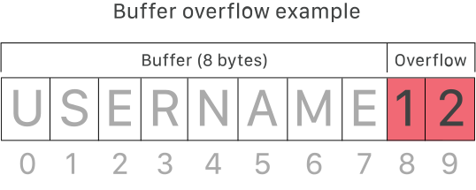

Security
Minaidis Kostas | Instructor | Codeworks
What is Security?
Mentality Shift. From kid to grown-up
It's a wild (web) world out there!
Security considerations should always accompany your coding habits from now on.
...along with performance and readability of course.
Security is a very broad field
Becoming a Security Expert/Specialist requires lots of time, training, experience and certifications.
The terminology (XSS, CSRF, DDoS, etc.) can be intimidating and oftentimes confusing.
...don't worry too much about this, in the beginning.What you need to keep in mind
Repeat after me...-
All user input is evil. Act accordingly:
Restrict / Validate / Sanitize. * -
Security: must always be implemented on both ends: Frontend/Backend
-
Start with 0 or minimal privileges and increase moderately and cautiously.
-
Same goes for (sensitive) data: share as less as possible
User Input
Guilty until proven... acceptable
⚠️ Security Checklist ⚠️
- Is the input going to be stored somewhere? (Database, localStorage, server, etc.)
- Is the input going to be processed/parsed/displayed at some other level?
Frontend/Backend
Look both ways before crossing
There's no point in enforcing a strong password policy on the Frontend, if the same policy has not been implemented on the Backend as well.
Remember: users can view and manipulate Frontend code.
The following maxlength property won't protect our "back".

Prefer a Strict Access Policy
⚠️ Security Checklist ⚠️
- Start with 0 or minimal access, and gradually open the doors to features and functionality on a as-needed basis.
- Give your server and services minimum privileges. Grant higher privileges with caution and only if needed.
- Does your server or services really require root/administrator privileges? If not, turn them off.
- Do your users need to be authenticated for a particular feature/functionality?
- Do your authenticated users need special roles for a particular feature/functionality?
Protect your Data
⚠️ Security Checklist ⚠️
- Don't share sensitive information (e.g. API keys and secrets, passwords, Error messages, etc.) in public-facing apps and web sites and try to avoid storing them on the client-side unencrypted (cache, cookies, etc.)
- Are you using secure channels to send or receive sensitive information (HTTPS/TLS vs HTTP)?
- Are you doing everything you can to protect your stored data: Validate / Encrypt / Backup?
Bottom Line
You're an adult coder now.
- Security and Accessibility are not an afterthought.
- They should always accompany your code.
- Badly written code (no linters, no standards, no best practices, etc.) is prone to security vulnerabilities.
- Keep learning and studying the field of Web Security. There's more ground to explore.
- Don't reinvent the (security) wheel. Use well-trusted, broadly used and up-to-date security libraries and frameworks to secure your apps.
References & Resources
(For further study)